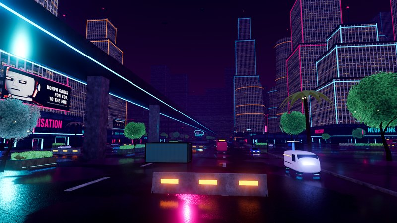

WEJDŹ DO CORP CITY
CORP WARS
OSTATNI BUNT LUDZI
TWOJA GRA
Sprawdzanie instalacji…
Łączenie z launcherem
DOSTĘPNE WYDANIE
Pobieranie katalogu…
Aktualne wydania pojawią się tutaj po sprawdzeniu GitHuba.
TWOJA INSTALACJA
Wybierz, w co grasz.
Zmiana wersji zastępuje obecną. Zawsze zostaje jedna.
Przypnij konkretne wydanie
Windows x64Buildy testowe z panelu
Najnowszy na górzePrzypięta wersja pozostaje bez automatycznych aktualizacji. Aby wrócić do aktualizacji, wybierz najnowszą stabilną. Powrót do starszej wersji wymaga ponownego pobrania.
AKTUALIZACJA GRY
Brak aktywnego pobierania.
Nowa paczka zostanie sprawdzona przed podmianą gry.
—
Gotowa- 01 · Pobieranie
- 02 · Sprawdzanie
- 03 · Instalowanie
Podmiana poczeka na zamknięcie gry. Po zakończeniu stara wersja i plik tymczasowy zostaną usunięte; zapisy i ustawienia pozostaną.
PREFERENCJE
Gotowy, kiedy Ty.
Wybierz, jak launcher ma przygotowywać grę.
JEDNA INSTALACJA
Corp Wars
Zapisy gry są przechowywane osobno. Cofnięcie wersji nie usuwa ustawień ani zapisów, ale starsza gra może nie obsługiwać ich nowego formatu.
Aktualizacje samego launchera znajdziesz na stronie GitHub Releases. Obecna wersja obsługuje pełne paczki Windows x64.